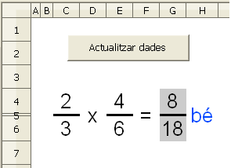
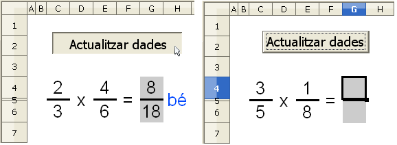
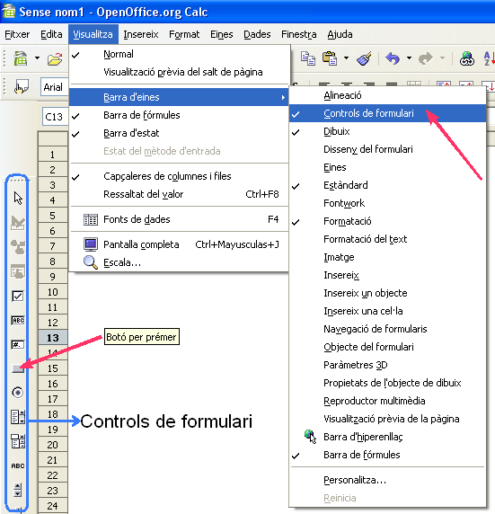
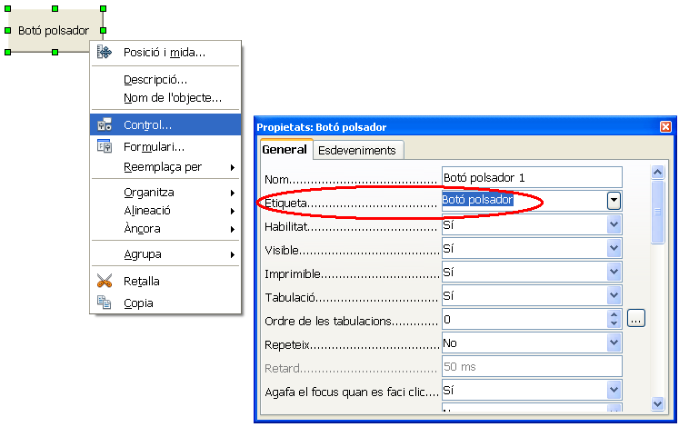
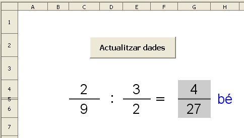

Multiplicar fraccions
Presentació gràfica de l'activitat:

Funcions que es fan servir en aquesta activitat
- Operador de multiplicar (*)
Objectiu de l'activitat
Multiplicar fraccions amb autoavaluació.
Desenvolupament de l'activitat:
1. Obrir el fitxer M3 i canviar el nom de Full3 pel de M3P2 fracció multiplicació
2. Formatar les cel·les del rang C4:G6 amb els següents atributs:
- tipus de lletra: arial
- tipografia: normal
- mida: 16
3. Ecriure a la cel·la C4: =SI($A$1=0;ALEATENTRE(1;8))
4. Ecriure a la cel·la E4: =SI($A$1=0;ALEATENTRE(1;8))
5. Ecriure a la cel·la C6: =SI($A$1=0;ALEATENTRE(C4+1;9))
6. Ecriure a la cel·la E6: =SI($A$1=0;ALEATENTRE(C4+1;9))
8. Fusionar les cel·les D4:D6 i formatar la cel·la D4 de les següent manera:
- mida de lletra: 16
- alineació centrada vertical i horitzontalment
9. Color de fons de les cel·les G4 i G6: gris 20%.
10. Fusiona les cel·les H4:H6.
11. Ecriure a la cel·la H4 =SI(O(G4="";G6="");"";SI(I(J4=G4;J6=G6);"bé";"no"))
12.Formatar la cel·la H4 amb les següents atributs:
- Alineació centrada vertical i horitzontalment.
- Color de la lletra: blau 5
13. Esciure a la cel·la J4: =C4*E4
14. Esciure a la cel·la J6: =C6*E6
15. Ocultar les cel·les J4 i J6
16. En aquest pas es demana fer una macro amb les següents funcions:
- Esborrar les cel·les G4 i G6
- Que la ce·la A1 tingui el valor de 0
Una macro serveix per a fer dues o més accions amb un sol clic amb la qual cosa es simplifica la feina. En aquesta pràctica es tracta de fer una macro que esborri les cel·les G4 i G6 i que la ce·la A1 tingui el valor de 0 per així actualitzar les dades.
Observar els següents gràfics:

Observar que en en fer clic al botó Actualitzar dades del primer gràfic, s'observa el següent en el segon gràfic:
- s'actualitzen les dades (les dades canvien)
- s'esborra el resultat
- la cel·la G4 és la cel·la activa
El Botó per prémer que porta per nom "Actualitzar dades" conté una macró que permet actualitzar les dades d'una operació i esborrar el seu resultat perquè es pugui practicar tantes vegades com es cregui convenient.
Per enregistrar aquesta macro, es pot fer el següent:
- Del menú, fer clic en Eines|Macros|Enregistra una macro
- Havent-ho fet, es mostra una finestreta anomenada “Enregistra una macro” que significa que totes les accions que es facin a partir d'aquest moment es quedaran enregistrades.
- Fer clic en la cel·la A1, escriure-hi el número zero i prémer la tecla Enter .
- Fer clic en la cel·la G4 i suprimir el seu contingut premen la tecla Supr. Fer el mateix a la cel·la G6.
- Fer clic en Atura l'enregistrament de la finestreta que inicialment s'havia mostrat i llavors es mostra una altra finestra anomenda “Macros de l'OpenOffice.org Basic”
- Al bloc d'on hi ha escrit "Desa la macro a", buscar el fitxer en el qual s'està treballant: M3.ods i fer-hi clic a sobre.
- Escriure el nom que us sembli de la macro sense deixar espais ni escriure amb accents dintre de la casella d'on hi ha escrit Nom de la macro i després fer clic en Desa. En fer-ho, es mostra una finestra anomenada Exercici nou i que per defecte hi ha escrit dintre de la casella el nom de Module1. Canviar el nom de Module1 pel de M3.
Havent fet aquests passos es té enregistrada la macro que permetrà actualitzar les dades i esborrar el resultat quan aquesta macro sigui executada. Per executar-la, es pot fer el següent:
- Del menú, anar a Eines | Macros | Executa una macro…| i s'obre una finestra anomenada Selector de macros on al bloc de Biblioteca es mostra el fitxer M3 (el fitxer amb el qual s'està treballant)
- Fent doble clic al fitxer M3 es mostra una carpeta anomenada Standard. Fent doble clic a la carpeta Standard es mostra la carpeta M3
- Fer clic a la carpeta M3 i observar que al bloc Nom de la macro es mostra seleccionada la paraula Main.
- Fer clic en Executa i observar com s'actualitzen les dades i s'esborra el resultat de la multiplicació de la fracció.
Executant la macro d'aquesta manera no es simplifica la feina, amb la qual cosa serà més pràctic executar-la fent un sol clic al Botó per prémer. Per fer-ho, es pot fer el següent:
- Fer Clic al Botó per prémer de la barra de controls de formulari i després moure el ratolí per la zona de les cel·les per comprovar que el punter del ratolí es converteix en un signe positiu (una creueta) amb un petit rectangle. En cas que no es vegi la barra de controls de formulari, anar a Visualitza | Barra d'eines | i clic en Controls de formulari
- Prémer el botó esquerre i començar a moure el ratolí sense deixar de prémer el botó esquerre. Observar que es va dibuixant un rectangle i, que en deixar de prémer el botó esquerre, apareix un figura rectangular amb el nom de Botó o Botó polsador (depenent de la versió de l'OpenOffice). Aquest Botó serà el comandament amb el qual més tard s'executarà la macro.
- Passar el punter per sobre del Botó i observar que el punter del ratolí es converteix amb una mena de creu amb puntes.
- Estan el punter a sobre del Botó, fer clic al botó dret del ratolí i del menú contextual fer clic a l'opció de Control mostrant així una finestra anomenada: Propietats: botó
- Fer clic a la solapa "Esdeveniments" i observar que en la segona línia hi ha escrit: En Iniciar, En Començar o Executa l'acció (depenent de la versió de l'OpenOffice).
- Fer clic al comandament (botonet) que està a la dreta de En Iniciar o En Començar o Executa l'acció
- Es mostra una finestra anomenada Assigna una acció en la qual cal que fer clic en l'opció: En Iniciar o En Començar i després fer clic on hi ha escrit Macro. Havent-ho fet, és possible que trigui uns segons en obrir-se una finestra anomenada: "Selector de macros"
- Un vegada oberta la finetra Selector de macros, observar que a l'apartat de Biblioteca hi ha: Les meves macros, Macros de l'OpenOffice.org i el nom del fitxer amb el qual s'està treballant: M3.
- En fer doble clic en el fitxer M3, es veurà la macro qua anteriorment s'havia fet (enregistrat) amb el nom de Main. Fer clic en Main i clic en d'acord.Si és axí, aquesta és la macro que s'ha de fer servir fent clic en d'acord.
- Després de fer clic en d'acord, es tanca de manera automàtica la finestra i queda visible la finestra anomenada "Assigna una macro" en la qual cal tornar a fer clic en d'acord.
Havent fet aquests passos ja es té assignada la macro al Botó polsador fent més fàcil l'accés a la macro. Ara només resta activar aquest Botó o Botó polsador fent clic a la icona de mode disseny activitat/desactiviat ( icona que es veu a la barra de controls en la qual hi ha un escaire, un regle i un llapis dibuixats). Si en fer clic al mode de disseny de la barra de controls s'oberva que la resta de controls es desactiven (s'atenuen), llavors el botó de la macro està activat per a fer la funció que li pertoca. Ara només cal fer clic al Botó o Botó polsador per comprovar que executi la macro.
Resumint:
Quan es crea un Botó per prémer, per defecte es mostra amb el nom de Botó o Botó polsador (depenent de la versió de l'OpenOffice). No obstant, aquest Botó pot ser etiquetat amb un altre nom.
Observar el següent gràfic per visualitzar Controls de formulari i així poder accedir al Botó per prémer:
- Anar a Visualitza | Barra d'eines | i clic en Controls de formulari

Observar el següent gràfic per canviar el nom del Botó per prémer
- Estant el punter del ratoí a sobre del Botó per prémer (etiquetat amb el nom de Botó polsador), fer clic amb al botó dret del ratolí per mostrar el menú contextual
- De les opcions, fer clic en Control i de le finestra mostrada triar la solapa General per a finalment escriure un nom a la casella corresponent a Etiqueta

17. Crear un Botó per prémer (comandament) de Controls de formulari i assignar-li la macro feta anteriorment (la comentada al punt 16).
18. Ajustar l'amplada de les columnes com es cregui convenient i fer que els nombres es mostrin alineats al centre de manera vetical i horitzontal.
19. Comprovar que funcioni correctament l'activitat
20. Desar el fitxer M3
Dividir fraccions
Presentació gràfica de l'activitat:

Funcions que es fan servir en aquesta activitat
- Operador de multiplicar (*)
Objectiu de l'activitat
Dividir fraccions amb autoavaluació.
Desenvolupament de l'activitat:
1. Obrir el fitxer M3 i afegir un nou full amb el nom de M3P2 fracció divisió
2. Formatar les cel·les del rang C4:G6 amb els següents atributs:
- tipus de lletra: arial
- tipografia: normal
- mida: 16
3. Ecriure a la cel·la C4: =SI($A$1=0;ALEATENTRE(1;9))
4. Copiar la cel·la C4 a les cel·les E4, C6 i E6
5. Alçada de la fila 5:1mm
6. Inserir l'operador de dividir (:) com es veu en la presentació gràfica de l'activitat
7. Color de fons de les cel·les C5, E5, G4 i G6: gris 20%
8. Fusionar les cel·les H4:H6.
9. Ecriure a la cel·la H4: =SI(O(G4="";G6="");"";SI(I(J4=G4;J6=G6);"bé";"no"))
10. Formatar la cel·la H4 amb les següent característiques:
- Alineació centrada vertical i horitzontalment.
- Color de la lletra: blau
11. Esciure a la cel·la J4:=C4*E6
12. Esciure a la cel·la J6: =C6*E4
13. Fer una macro amb les següents funcions:
- Esborrar les cel·les G4 i G6
- Que la ce·la A1 tingui el valor de 0
14. Crear un Botó per prémer de Controls de formulari i assignar-li la macro feta anteriorment.
15. Ocultar la columna J
16. Ajustar l'amplada de les columnes com es cregui convenient i fer que els nombres es mostrin alineats al centre de manera vetical i horitzontal.
17. Comprovar que funcioni correctament l'activitat
18. Desar el fitxer M3

|
|

|
|
|